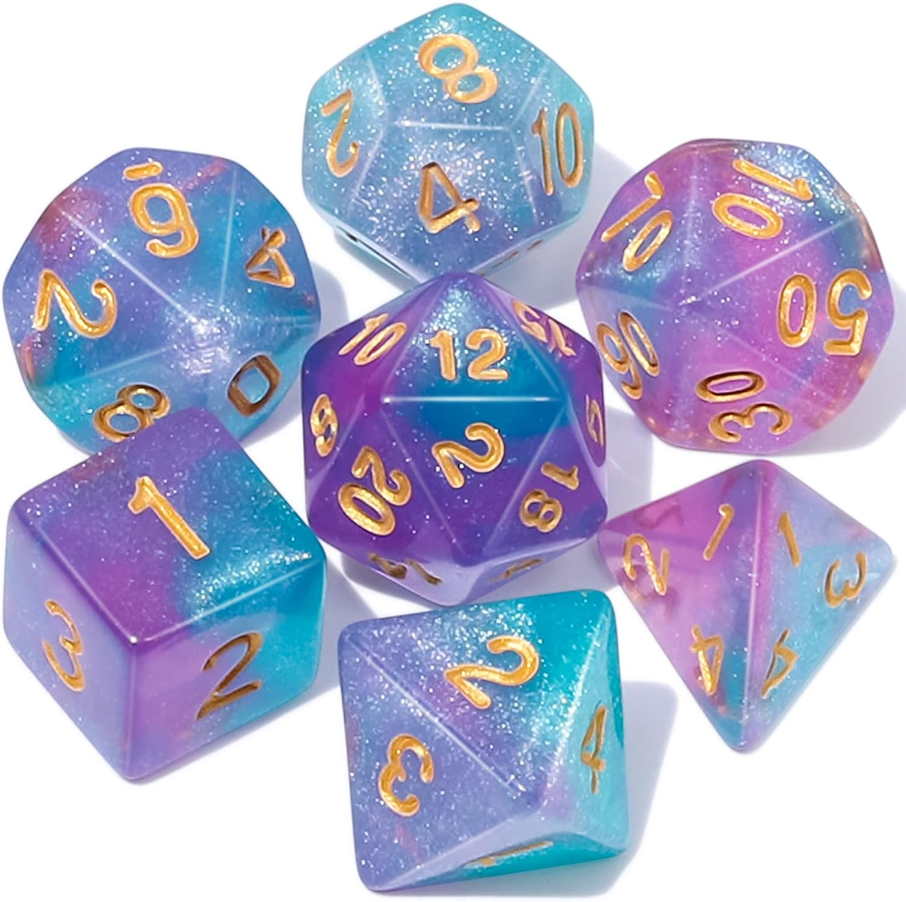
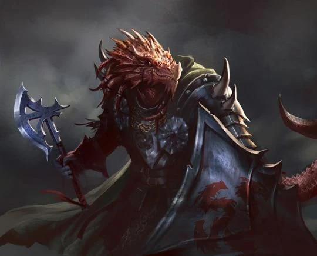
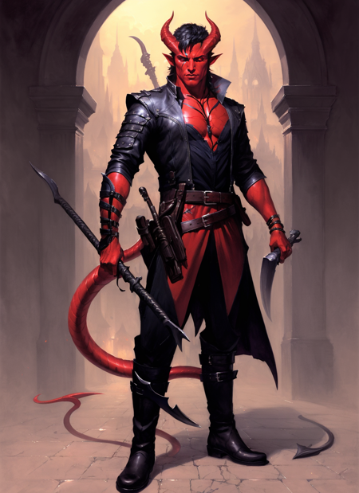

Welcome to the Beginners Guide to Character Creation in Dungeons and Dragons!
Making a character for the first time can seem intimidating. To help with this, below is a
guide for those who are new to Dungeons and Dragons. You'll get the hang of it in no time, but remember: this is a game, so don't take it too seriously.
This is intended to be fun!
Supply List
To start, you will need a set of dice. This includes:
A 4-sided die (D4) - This will look like a pyramid.
A 6-sided die (D6) - Commonly found in other tabletop/boardgames.
An 8-sided die (D8) - Looks like a diamond.
Two (2) 10-sided dice (D10 or Percentage Dice when rolled together) - One will have digits 0-9, the other will have numbers 00-90.
A 12-sided die (D12) - Each face of this die will be in the shape of a pentagon
A 20-sided die (D20) - This one is not necessary for character creation, but can be helpful for beginners and those who have trouble with thinking of certain characteristics that we will address later.
Fig.1 - Example of a complete dice set
You will also need a Player's Handbook.
Lastly, you will want something to take notes with. A pencil and notebook are reccommended, but if you prefer to use a tablet or laptop, or even just your phone, these all work as well!
Ability Scores
In Dungeons and Dragons, many outcomes are determined by rolling a D20 and adding an Ability Score. Each character will have 6 different abilities that will determine a variety of skills for that character. These abilities include:
Strength - a measure of physical power. Used to determine how much one can carry, how much weight a character can pull or lift, and how hard they hit with certain weapons.
Dexterity - akin to a character's agility. This stat determines how well a character can stealth their way through an area, steal from others without being noticed, avoid traps, dodge some attacks, and also determines the attack of some weapons.
Constitution - This stat determines a character's endurance. In addition, Constitution is used when determining a character's health score.
Intelligence - reason and memory. This stat helps determine the damage of some spells, as well as a character's resistence to them. It is also useful for a recalling useful information and determines some important skills.
Wisdom - perception and insight. High-wisdom builds are very good at reading a room or a person, and are naturally perceptive. Also determines some spell damage and resistances.
Charisma - force of personality. High-Charisma builds might be good at not just persuasion, but intimidation as well. There is much versatility with Charisma. Also used for some spells and resistances.
Different races and classes have different Ability Score priorities, but feel free to customize these as you see fit for your character. There are many different ways to determine these stats, but the most common way to do this is to roll four (4) D6 and add together the three highest values, once for each stat.
With that out of the way, let's move on to Character Race.
Character Race
In Dungeons and Dragons, there are several different playable races. For the purpose of this guide, we will focus on the races listed in the Player's Handbook.
For other races and their characteristics, a comprehensive list can be found here, but it is reccommended that a new player
starts with the available races in the handbook.
Playable Races in the Player's Handboook:
Each race has it's own advantages and characteristics. Some can see in the dark, while others are resistant to heat or cold. Some even have special abilities, like breathing fire or weilding certain magics.
Below is a brief description of each race:
Dwarf - Dwarves are known for their short stature, naturally high constitution and resistance to poison. Despite their size, they are very compact, often weighing as much as an adult human.
Dwarves also value their beards, and take great care in maintaining them. They also live much longer than some of the other races (about 350 years).
Elf - Elves are an ancient and magical people, descended from a race of beings that exist in a realm known as the Feywild. They have a love of nature, magic, and the arts, and often surround themselves with these things.
They are typically tall and slender beings, with graceful and fine features considered hauntingly beautiful to other races. Elves live longer than any other race in the Player's Handbook(around 700 years), and as such often see younger races
as rather infantile.
Halfling - The Dungeons And Dragons equivalent to Hobbits from J.R.R Tolkien's The Lord of the Rings, many Halflings value the comforts of home over all else, whether that means a warm hearth and a cup of tea, or a wagon jostling down a country road.
Halflings often survive in the world of much larger people by avoiding notice or, if that fails, avoiding offence. They typically stand at 3 feet tall, and weight between 40 and 45 pounds.
Human
- Often overlooked in character creation in favor of other more unusual races, humans are the everyman of Dungeons and Dragons. They are the most adaptable and ideal for beginners, as their stats and abilities can accomodate almost any class.
Humans are often seen as ambitious by other longer-lived races, sometimes to the point of aggression. However, while some Humans can also be xenophobic, the majority of Humans get along with member of other races just fine.
Dragonborn
- Dragonborn, as the name suggests, can trace their lineage back to a variety of dragons, and as such, share a number of characteristics with them. These can include a long snout, sharp teeth, scales, claws, and sometimes even a tail.
Possibly their strongest attribute, however, is their Breath Weapon, which can have a variety of effects depending on the color of their scales, from spewing a poision cloud, to firing a beam of lighting, to burning everything within a cone in front of them. Despite this intimidating visage, many Dragonborn enjoy
living among other races, and can have a variety of talents, magical and mundane.
Depiction of a Dragonborn warrior.
Gnome
- Gnomes are similar in stature to Hobbits, but are much more lithe, adventerous, and somewhat mischievous on occasion. They can be quite clever, constructing clockwork machinations to suit their needs. Gnomes are known for their joy of life, often finding reasons to celebrate in the things around them.
They can often be found in adventuring parties, due to their innate curiosity and impulsiveness.
Half-Elf - Half-Elves are beings with a dual lineage, most commonly the result of a union between an Elf and a Human (though Half-Elves can result between Elven unions with other races as well). They share many traits with their Elven parent, though their ears are often not as long, and they often have a build similar to
their non-elven parent. The nature of their existence leads to difficulties living in either Elven or Human society, and as such, they will often choose a life on the road, either alone or with other misfits.
Half-Orc - Half-Orcs are often born from an alliance between tribes of Orcs and Humans. They share their strength and some of their appearance with the Orc parent, such as grey or green skin and tusks that protrude from their mouths, while maintaining the size and similar lifespan to their human parents.
In older editions of the Player's Handbook, Half-Orcs would often be associated with the evil god Gruumsh, resulting in their stereotypical evil nature. However, this was changed in later editions to be just as likely good as evil.
Tiefling
- Tieflings are among the most popular choice of races for many players. Descended from fiendish beings (devils, demons and others), they largely resemble Humans, except for their red or purple colored skin, horns protruding from their head, and a tail. Their infernal heritage grants them natural magical abilities
and resistances, but also comes with prejudices due to their appearance. Despite this, it isn't uncommon to find Tieflings living amongst members of other races.
 A picture of a red Tiefling rogue.
These are just brief descriptions of each race as listed in the Player's Handbook. While you should not feel limited by the races found in the book, they can provide a good place for novices to start.
Character Classes
In addition to picking a race, you will need to pick a combat class. Like the races, each class has its own advantages and disadvantages.
Hit Dice
One important thing to keep in mind for each class is their listed Hit Dice. These are a dice you roll to determine a character's health points, as well as how much they can recover in certain situations. These can be a D6, D8, D10, or D12.
With that in mind, Fig.2 shows a table of each class, along with a brief description and their Hit Dice:
Classes in Dungeons and Dragons
Class
Description
Hit Dice
Barbarian
Known for feats of extreme strength while under the influence of a beserker Rage. Prioritizes Strength, followed by Constitution.
D12
Bard
Uses performance art (music, poetry, etc.) to cast spells and enchant opponents. Prioritizes Charisma, then Dexterity.
D8
Cleric
Often the healer of the group, holy powers are granted by a deity, though often has some marshal skill as well. Prioritizes Wisdom, then Charisma.
D8
Druid
Powers come from communion with nature. Can shapeshift and control the elemments. Prioritizes Wisdom, then Intelligence.
D8
Fighter
Master of marshal combat, can weild a variety of weapons and armor. Prioritizes Strenght or Dexterity, then Constitution.
D10
Monk
Martial Arts master, often fights unarmed but can also use a bowstaff. Prioritizes Dexterity and Wisdom, then Strength.
D8
Paladin
A holy warrior who gains their abilities from their sacred oath. Prioritizes Strength and Charisma, then Wisdom.
D10
Ranger
A master hunter, combines martial prowess with natural magics. Prioritizes Dexterity and Wisdom, then Strength.
D10
Rogue
Uses stealth and other tricks, magical and mundane, to overcome obstacles and enemies. Prioritizes Dexterity, then Intelligence.
D8
Sorcerer
A spellcaster whose power comes from their bloodline. Prioritizes Charisma, then Constitution.
D6
Warlock
A spellcaster who gains their abilities from a contract with an otherworldly being. Prioritizes Charisma, then Wisdom.
D8
Wizard
A learned spellcaster whose magic is learned from years of study and practice. Prioritizes Intelligence, then Wisdom.
D6
Fig.2 - A table containing information about each class, including a short description and their Hit Dice.
Despite the prioritizations listed above, there is no right or wrong way to build a character. Feel free to customize your stats according to how you feel the character's skills would be distributed.